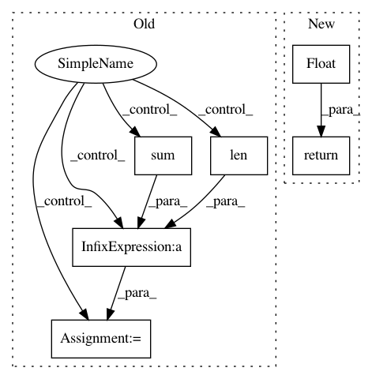

8d9e7975d0bf840b8061b7a60ef6385fd9a2fa5a,syft/workers/static_fl_worker.py,StaticFLWorker,_get_download_speed,#StaticFLWorker#Any#Any#,141
Before Change
new_speed = buffer_size / (time_taken * 1024)
speed_history.append(new_speed)
if len(speed_history) % CHECK_SPEED_EVERY == 0:
avg = sum(speed_history) / len(speed_history)
deviation = avg - min(speed_history)
if (deviation < 20) and (avg > 0):
break
if len(speed_history) == 0:
After Change
speed_history.append(new_speed)
if len(speed_history) == 0:
return float("inf")
else:
avg_speed = sum(speed_history) / len(speed_history)
return avg_speed
In pattern: SUPERPATTERN
Frequency: 3
Non-data size: 6
Instances
Project Name: OpenMined/PySyft
Commit Name: 8d9e7975d0bf840b8061b7a60ef6385fd9a2fa5a
Time: 2020-07-10
Author: hericles.me@gmail.com
File Name: syft/workers/static_fl_worker.py
Class Name: StaticFLWorker
Method Name: _get_download_speed
Project Name: glm-tools/pyglmnet
Commit Name: 56778bc417798a7a63669c54abf5fcad508e3e51
Time: 2017-03-30
Author: pavan.ramkumar@gmail.com
File Name: pyglmnet/metrics.py
Class Name:
Method Name: accuracy
Project Name: OpenMined/PySyft
Commit Name: 8d9e7975d0bf840b8061b7a60ef6385fd9a2fa5a
Time: 2020-07-10
Author: hericles.me@gmail.com
File Name: syft/workers/static_fl_worker.py
Class Name: StaticFLWorker
Method Name: _get_upload_speed